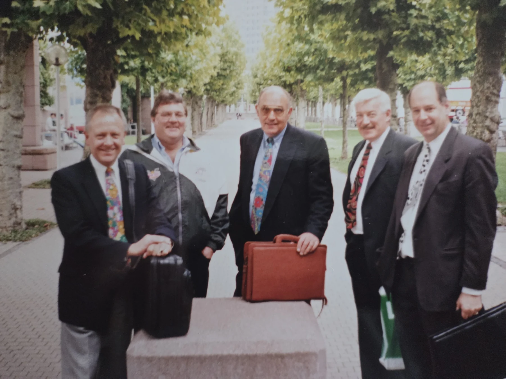
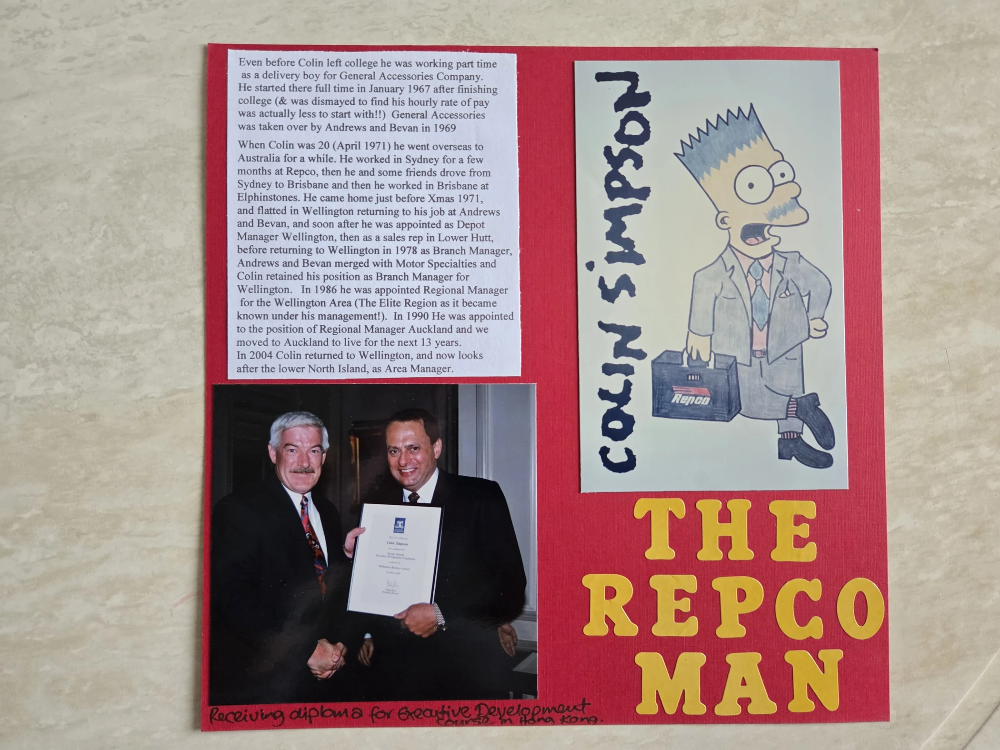
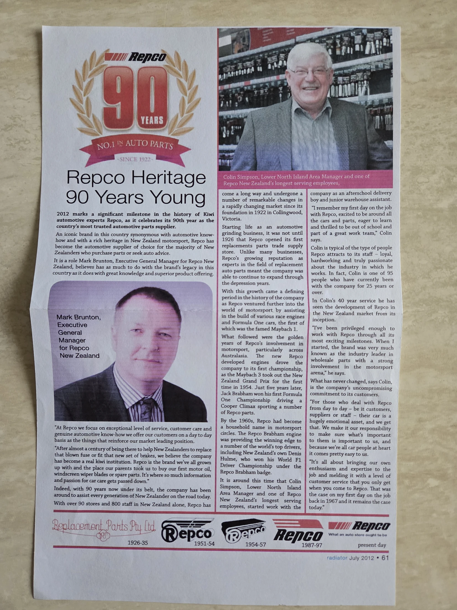
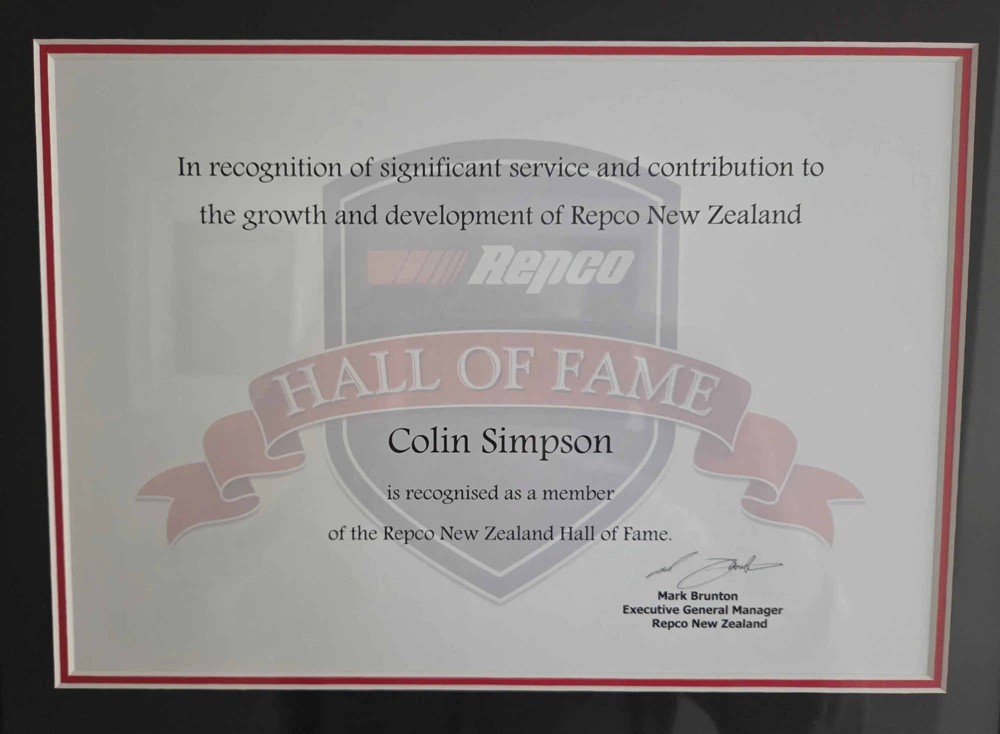

Fifty-two years of work done properly — and a career remembered most clearly through its people.
1966–2020
The people manager
Colin gave 52 years to the automotive-parts industry and the Repco family of companies,
rising from after-school delivery boy to senior regional leadership, commercial business
development and the Repco New Zealand Hall of Fame.
Titles tell only part of it. Colin knew his staff, knew their families and built regions
where people wanted to stay. Along the way came staff number 23, the “Elite Region” and
the nickname that followed him all the way to Melbourne: Sir Colin.
1966–67
The first delivery
While attending Wellington Technical College, Colin began part-time work with the
General Accessory Company in mid-1966. He joined full-time in January 1967, beginning
a working life that would span more than half a century.
1971–79
Australia, then home
A move across the Tasman took Colin first to Sydney and then Brisbane. He returned to
Wellington at the end of 1971, moving through warehouse supervision, depot management,
field sales and branch management as the business and his responsibilities grew.
1979–90
Branch leader and an Elite Region
Colin became Wellington branch manager in 1979 and worked through the A&B and Motor
Specialties merger years. In 1986 he became regional manager for the territory from
Wellington to Gisborne, leading the team that earned the title “Elite Region”.
That team later gave Mike his first job and a guided start among people Colin had brought
together with care. The standards, confidence and relationships Mike gained there helped shape
his career — a lasting piece of the Repco family, and of his dad, carried forward.
1990–2004
Auckland and senior leadership
The family moved north when Colin became Auckland regional manager in 1990. Over the
next 13 years he worked through changing upper North Island structures and senior
management responsibilities — still focused on the people behind the numbers.

An old-school corporate capture: the Repco men and their briefcase phones.
2004–20
Back to the lower North Island
Colin returned to the lower North Island in 2004 and continued in regional, area and
commercial roles. He retired on 31 March 2020 after 52 years — but the calls, lunches
and stories with the Repco people never really stopped.
2012
Forty years recognised
A dinner in January marked forty years of service, followed by a feature in the July
2012 edition of Repco Heritage. It captured the long road already travelled — with
another eight years still to come.

The Repco ManA career preserved in the family scrapbook.

Repco HeritageJuly 2012.
Hall of Fame
A career honour
Repco New Zealand recognised Colin’s contribution with induction into its Hall of Fame.
Ally was, fittingly, beside him — as she was for every major milestone in the story.
Colin and Ally with Repco’s Hall of Fame honours board.

Repco New Zealand Hall of FameThe formal recognition of a remarkable career.
2022
The centenary invitation
In November, Colin was invited to Melbourne for Repco’s centenary celebration among
about 1,250 people. The familiar “Sir Colin” nickname crossed the Tasman with him — a
small sign of the affection that remained long after the job titles changed.
“
The people remained. That may be the finest result of all.